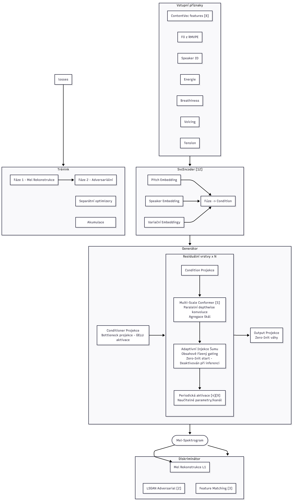

Obsah zdrojového mluvčího převedený do hlasu cílového mluvčího. V každém řádku: ukázka cílového hlasu (reference), originální nahrávka zdrojového mluvčího a výsledek konverze.
| Cílový mluvčí | Zdrojový mluvčí | Konverze |
|---|---|---|
| Cílový mluvčí | Zdrojový mluvčí | Konverze |
|---|---|---|